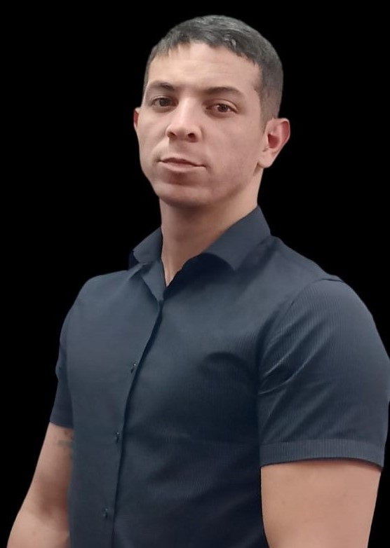

Olá! Sou Vinicius Gama Desenvolvedor full-stack
Olá, eu sou um desenvolvedor apaixonado por criar interfaces de usuário atraentes e intuitivas. Meu portfólio inclui projetos em HTML, CSS, BOOTSTRAP, JAVASCRIPT,NODEJS, EXPRESSJS, PHP, MYSQL, POSTEGRESQL, GIT, todos com layouts responsivos para dispositivos móveis e desktop. Estou sempre em busca de aprimorar minhas habilidades e aprender novas tecnologias. Sou um colaborador comprometido com a comunicação clara em equipe. Espero poder contribuir com meus conhecimentos para seus projetos. Obrigado por visitar meu portfólio!
Saiba Mais!
